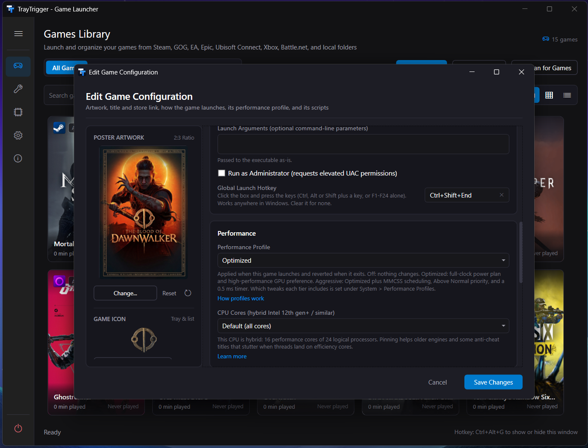
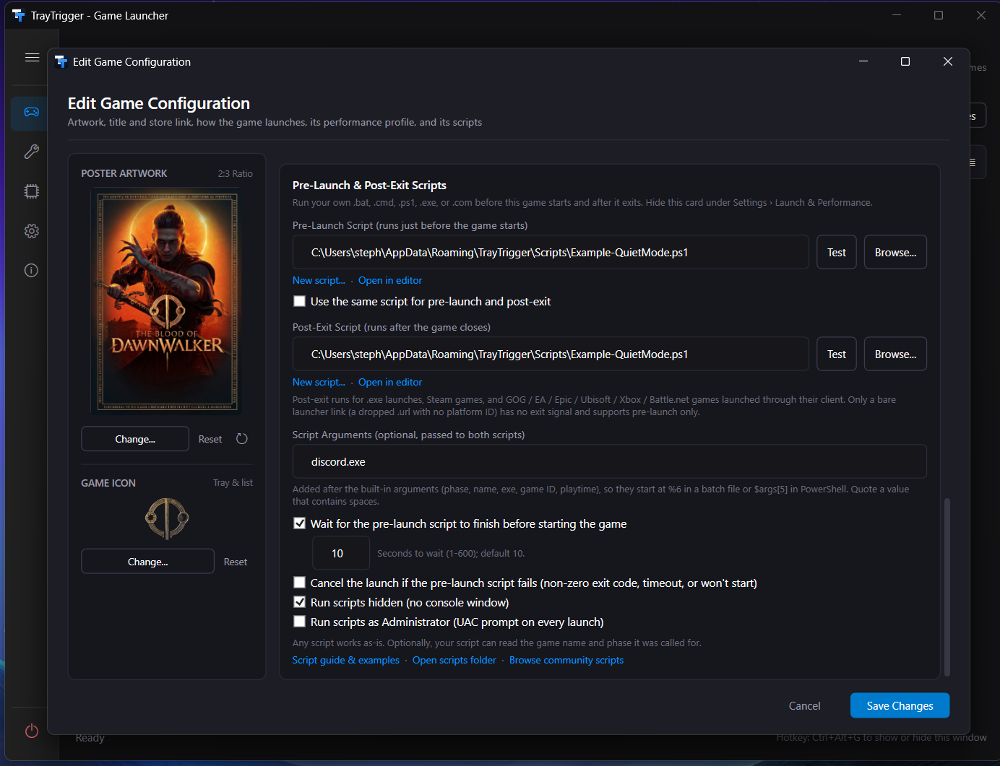

From download to play in three steps
Start with the launcher. Add profiles and automation when you want them.
Choose your setup
Get the Windows installer or portable ZIP. Windows 10/11, 64-bit. No separate .NET install needed.
Find your games
Open Scan for Games in the library. Add an executable or shortcut for games the scan does not find.
Play from the tray
Right-click the TrayTrigger icon in the Windows system tray and choose a game. Leave its profile Off to launch without per-game tweaks.
First download? Read about signing and verifying your download.
A quick look at your next session
Explore these application screenshots. Select any image to see it full size.


From launch to exit, handled
Pick a game from the tray. TrayTrigger uses its launcher and the options you selected. Profiles and scripts are optional, so you choose how much to automate.
If enabled, records and applies the game's Performance Profile. Runs your pre-launch script if you have configured one.
Starts the game with your launch arguments, as Administrator if you asked, through Steam, GOG, Epic, EA, Ubisoft, Xbox, or Battle.net, or directly. Steam, GOG Galaxy and Epic start quietly in the background, so only the game appears.
Stays a tray icon. The tooltip and the menu's Now Playing section show what's running. No window to alt-tab past.
Restores per-game profile settings to their previous state. Runs your configured post-exit script and closes the launcher if selected. After a crash, the saved profile state is restored on next start.
Every game in one library
Find the game you want without remembering which store it came from. Browse cover art, filter your library, and keep favorites within reach.
- Seven launchers, one scan. Steam, GOG, EA, Epic, Ubisoft Connect, Xbox / PC Game Pass, and Battle.net games arrive with their real titles and launch through their own client. Drop any exe, shortcut, or folder for the rest.
- Artwork and info. Steam metadata and poster art, with optional SteamGridDB artwork and RAWG details using your own API keys.
- Three views: poster grid, large icons, detailed list. Filter by launcher, profile, or state; group by category; edit a whole selection at once, with undo.
- The tray menu. Now Playing, Recent, Favorites, and every category one right-click away, with game icons, a compact layout, and a per-game launch hotkey recorded from the keys you press.
Launchers that stay out of the way
- Launch arguments per game:
-windowed -ResX=1280,-dx11,-skipintro, whatever the engine takes. - Close the launcher after the game exits, so Steam, GOG Galaxy, Epic, the EA app, Ubisoft Connect, the Xbox app, or Battle.net isn't still sitting in your tray an hour later.
- Launchers stay minimized: Steam and GOG Galaxy start in the background and Epic launches silently, so only the game appears.
- Launch popup by the tray clock for hotkey and tray launches: what the game is waiting on, and the reason if a launch fails.
- Tools (optional): launch the apps you use alongside games, like DLSS Swapper or MSI Afterburner, from the same tray menu and hotkeys.
- Run as Administrator per game, CPU core affinity per game, launch directly to bypass a launcher entirely when the game allows it.
- Hardware monitoring in the same window: live CPU and RAM load, GPU, VRAM, displays, drives, and DirectX capability, without a second app.

Tuned for each game, restored on exit
- Off: no per-game tweaks. TrayTrigger just launches the game.
- Optimized: your custom high-performance power plan and high-performance GPU preference for that game. Opt-in extras: Enable HDR, Do Not Disturb, Unmute Speakers.
- Aggressive: everything in Optimized, plus System Responsiveness, MMCSS "Games" scheduling priority, Above Normal process priority, a 0.5 ms timer resolution request, and an off-by-default Defender exclusion.
- Every profile change is recorded and reverted on exit. Set it per game, or in bulk from the library.
Your scripts, before and after every game
- Five real-world examples ship with it: pause Wallpaper Engine, Quiet Mode (close Discord and friends, reopen after), Companion Apps, OBS replay buffer, Save Backup.
- Per-game Script Arguments, a Test Run button with captured output, timeouts, and cancel-the-launch-on-failure.
- Scripts run as you, never elevated unless you choose it. Review scripts before enabling them. Their effects depend on the script; configure a matching post-exit action when cleanup is needed.
- Community scripts live in the TrayTrigger-Scripts catalog, reviewed by pull request.
Windows, ready for play
Optional Windows settings for display, input, scheduling, and background activity. These are separate from per-game profiles: they stay applied until you revert them.
- See what changes. Review the current Windows state and the explanation for each setting.
- Choose what fits. Results depend on your PC and game; performance improvements are not guaranteed.
- Revert when you want. Undo settings individually or use Reset Defaults to restore the state TrayTrigger recorded. Bulk changes can create a System Restore point.

Keep your launchers. Simplify your routine.
Your games still launch through their own clients. TrayTrigger gives you a shared tray menu and optional steps around each session: apply a profile, run your scripts, and close the launcher afterward when configured.
FAQ
Is it safe? What does it touch?
You choose which profiles, system tweaks, and scripts to enable. Per-game profile settings restore on exit; system-wide tweaks stay applied until you revert them. Scripts run as you unless you choose elevation, and their changes require their own cleanup. Bulk system changes can create a System Restore point first. See SECURITY.md for the full breakdown.
Does it need administrator access?
Not to run. A few tweaks write machine-wide settings and show a UAC prompt when you enable them. TrayTrigger never runs elevated by default.
Does it phone home?
No telemetry. Outbound calls are Steam's public API (metadata and artwork for games you add), SteamGridDB and RAWG (only if you enter your own key), and GitHub Releases (update checks, which you can turn off).
Can changes be reverted?
Per-game profile settings restore on exit, with recovery on the next start after a crash. System-wide tweaks can be reverted individually or with Reset Defaults. Custom scripts are not automatically undone; use a post-exit script for any cleanup they need.
Is the download signed?
No. Releases are not code-signed, so Windows SmartScreen may warn the first time you run the installer. Releases are built by GitHub Actions from the public source and published with a SHA-256 checksum file. Verify a download with Get-FileHash in PowerShell and compare it to SHA256SUMS.txt on the release page, then choose More info and Run anyway. See the code signing section for details.
Where do I ask a question or report a game that scanned wrong?
Questions go to Discussions. Wrong art, name, or launcher goes on the scan tracking issue, one comment per game. Bugs get an issue.
Tell me how your first game went
Did the scan find your games? Did your first launch work? What would you like to automate next?
For a launch problem, include the game, launcher, Windows version, and TrayTrigger version. Review any screenshots or logs for personal information before posting.
Ready to play?
Free and open source. Installer or portable ZIP. Windows 10 or 11, 64-bit. Nothing to sign up for.
Update checks are built in and can be turned off. All releases
Releases are not code-signed. Verify your download against the release's SHA256SUMS.txt.